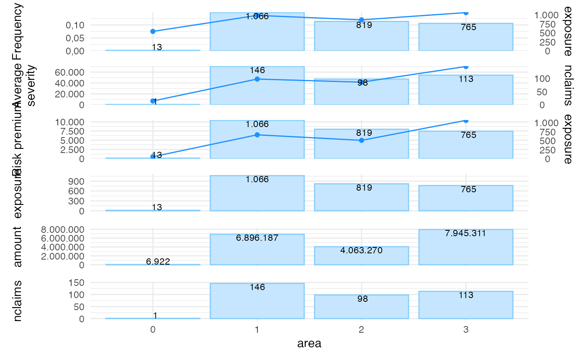
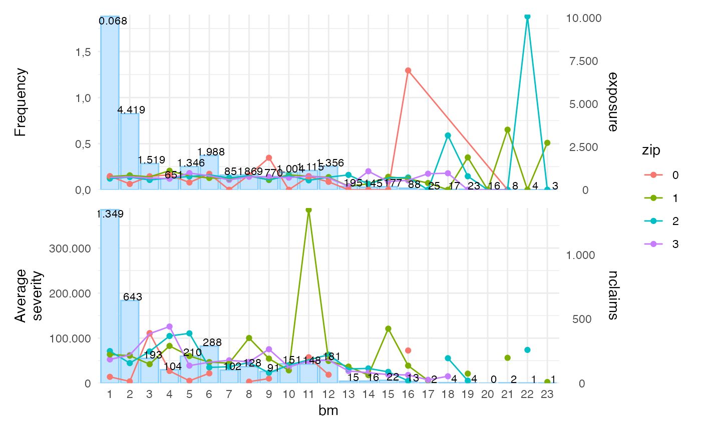
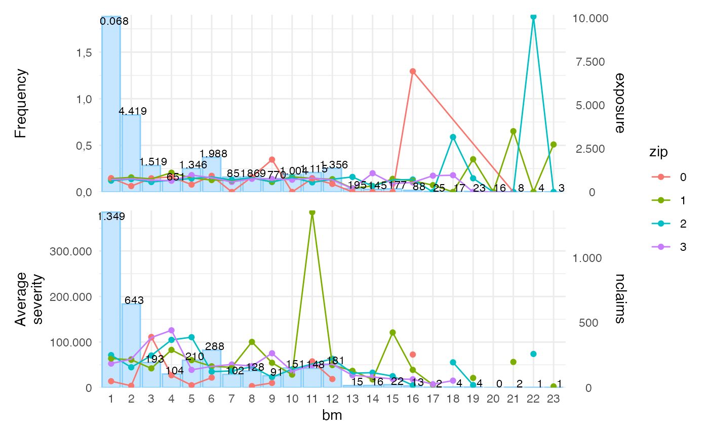

Automatically create a ggplot for objects obtained from univariate()
Source:R/univariate.R
autoplot.univariate.RdTakes an object produced by univariate(), and plots the
available input.
# S3 method for univariate
autoplot(
object,
show_plots = 1:9,
ncol = 1,
background = TRUE,
labels = TRUE,
sort = FALSE,
sort_manual = NULL,
dec.mark = ",",
color = "dodgerblue",
color_bg = "lightskyblue",
label_width = 10,
coord_flip = FALSE,
show_total = FALSE,
total_color = NULL,
total_name = NULL,
...
)Arguments
- object
univariate object produced by
univariate()- show_plots
numeric vector of plots to be shown (default is c(1,2,3,4,5,6,7,8,9)), there are nine available plots:
1. frequency (i.e. number of claims / exposure)
2. average severity (i.e. severity / number of claims)
3. risk premium (i.e. severity / exposure)
4. loss ratio (i.e. severity / premium)
5. average premium (i.e. premium / exposure)
6. exposure
7. severity
8. nclaims
9. premium
- ncol
number of columns in output (default is 1)
- background
show exposure as a background histogram (default is TRUE)
- labels
show labels with the exposure (default is TRUE)
- sort
sort (or order) risk factor into descending order by exposure (default is FALSE)
- sort_manual
sort (or order) risk factor into own ordering; should be a character vector (default is NULL)
- dec.mark
decimal mark; defaults to ","
- color
change the color of the points and line ("dodgerblue" is default)
- color_bg
change the color of the histogram ("#f8e6b1" is default)
- label_width
width of labels on the x-axis (10 is default)
- coord_flip
flip cartesian coordinates so that horizontal becomes vertical, and vertical, horizontal (default is FALSE)
- show_total
show line for total if by is used in univariate (default is FALSE)
- total_color
change the color for the total line ("black" is default)
- total_name
add legend name for the total line (e.g. "total")
- ...
other plotting parameters to affect the plot
Value
a ggplot2 object
Examples
library(ggplot2)
x <- univariate(MTPL2, x = area, severity = amount, nclaims = nclaims,
exposure = exposure)
autoplot(x)
#> Ignoring plots 4, 5, 9: input is unknown

autoplot(x, show_plots = c(6,1), background = FALSE, sort = TRUE)
 # Group by `zip`
xzip <- univariate(MTPL, x = bm, severity = amount, nclaims = nclaims,
exposure = exposure, by = zip)
autoplot(xzip, show_plots = 1:2)
#> Warning: Removed 16 rows containing missing values (geom_point).
#> Warning: Removed 5 row(s) containing missing values (geom_path).

# Group by `zip`
xzip <- univariate(MTPL, x = bm, severity = amount, nclaims = nclaims,
exposure = exposure, by = zip)
autoplot(xzip, show_plots = 1:2)
#> Warning: Removed 16 rows containing missing values (geom_point).
#> Warning: Removed 5 row(s) containing missing values (geom_path).
